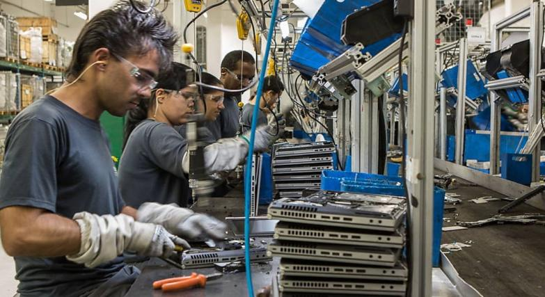
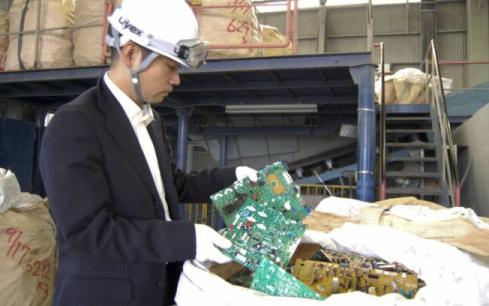

O tema escolhido (Reciclagem de lixo eletrônico) retrata o crescimento constante de produtos eletrônicos que o homem adquire e descarta, por inutilização, trocas, danos ou quaisquer motivos. É de devida necessidade a conscientização de nós consumidores e usuários, tanto quanto das empresas fabricantes sobre o descarte correto e adequado desses materiais eletrônicos.
Produtos eletrônicos são criados e desenvolvidos em quantidades exuberantes, acompanhando a crescente produção , vem a queda nos preços e alta acessibilidade, aumentando notavelmente o número de vendas; logo quanto mais produtos criados e comprados para sua utilização, mais são os descartes efetuados destes. O descarte dos aparelhos (eletrônicos) usados são levados ao lixo ou em lugares inadequados para receber esse tipo de material.
 Partindo desta problemática, a escolha do tema foi definida. Um tema que não abrange apenas nosso território nacional, mas sim todo o nosso planeta; um tema que precisa de mais atenção e concientização de todos. O lixo eletrônico configura-se como um grave problema para o meio ambiente e para a saúde (animal ou humana), desde sua produção até o seu descarte, pois trata-se de materiais cuja grande parte é poluente e tóxica, possuindo diversos tipos de metais pesados como seus componentes (chumbo, cádmio,ouro, gálio, mercúrio, arsênico, berílio, prata entre outros), que ao entrarem em contato com o solo, podem contaminar o lençol freático, as águas e também causar impactos ambientais em toda a fauna e flora locais, podendo vir a contaminar tanto nossos alimentos quanto os animais e o próprio homem, causando danos e doenças muitas vezes severas.
 Criação de postos e pontos de coleta adequada e reservada para lixo eletrônico é uma das soluções mais comuns e eficazes, acompanhada pela própria reciclagem de peças obsoletas.
Para que a conscientização ocorra, é necessário que nós, como parte dessa gigante expansão digital, e também como seres humanos, ajamos com frequência realizando intervenções e criando mais acesso e maneiras de conscientização populacional, visando instruir a todos o correto descarte e os mesmos a incentivar empresas a praticarem atos (conscientizar o consumidor sobre o descarte) a favor de todo o movimento de reutilização do lixo eletrônico.
O tema escolhido foi debatido, e nós integrantes chegamos à conclusão de que atualmente, no Brasil não temos tanta repercussão do assunto, quanto seria necessário para que a população tenha uma conscientização adequada do descarte e reciclagem de peças eletrônicas.
Por meio desta conclusão decidimos utilizar os nossos conhecimentos, pesquisas e estudos com base no tema, para fundamentar e criar um site totalmente instrutivo e consciente para implementar de maneira fácil e competente o entendimento e aprendizado sobre esse tema atualmente pouco discutidoem nossa sociedade, que mesmo possuindo diversas empresas especializadas na coleta, separação e reutilização desses produtos, ainda não conseguimos conscientizar tantas pessoas (quanto se é necessário), se comparado ao número crescente de vendas de aparelhos eletrônicos.

Recycling Wires
Inspirado por: UNIP, licenciado por: Nós.